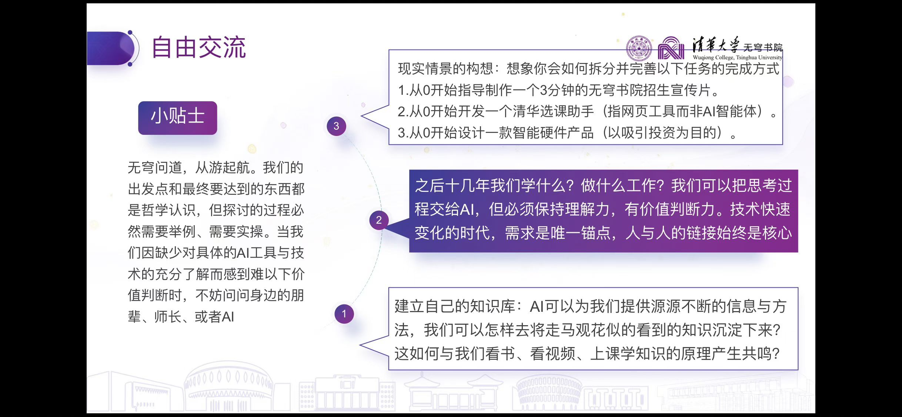
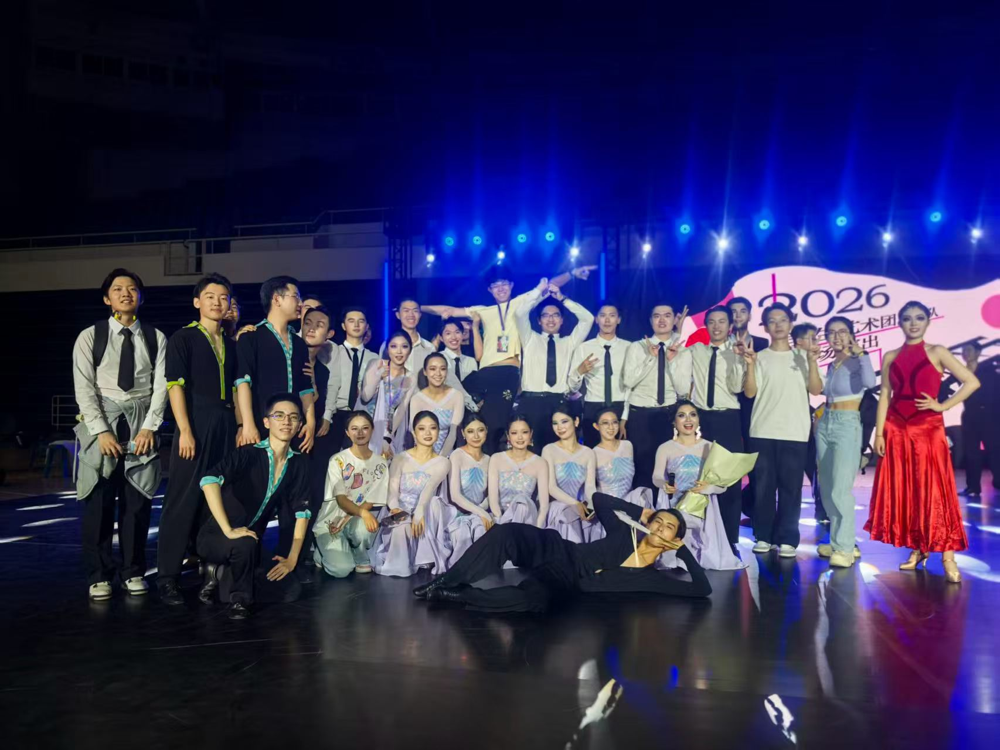

Persona
主题团日～完结撒花[转圈][转圈]
（P1是那天因为时间缘故没有来得及进行的“自由交流”环节的背景PPT[玫瑰]）
人们常说AI时代要来了，教育范式要变了，许多人要失业了。史纲的夏清老师说，复杂问题的解释本身就是一种解决。从党课小组第一次读书会到现在，我们一直都在尝试解释这一问题。
我还记得五一回家的那些日子(P2），平凡的山城里，无边的青翠与落霞日复一日轮现，带给我的是日复一日的宁静平和。仿佛无论世界有没有AI，这里的灯火都不会受到打扰。
2022年高考季，新雅书院的宣传片中，老师们指出了新时代人才培养的一个答案：“渊博雅正，通识为先”。
文史政经哲、计工理化生，样样精巧、样样交叉，谦谦君子、上知天文下知地理，遇事则降维打击、遇人则协同八方。无论最终落实情形如何，这一理念都是极先进的。
事在人为，事因人的存在而有意义。技术快速变化的时代，人的需求是判断对与不对的唯一锚点，人与人的链接始终是核心。这也是团日中学长分享里提到“产品经理的地位不降反升”的底层逻辑。新雅的通识君子理念，回应了对人的关切。
2025年，无穹书院成立，提出“用最AI的方式培养最具创新能力的AI领军人才”。对普通人而言，AI像一台超级浏览器，能够搜索并回答几乎任何你不知道的知识，甚至能帮你处理很多文书工作。在产业界，产品迭代的周期也因此大大缩短。可以说，AI正是通识人才成长的沃土，在其辅助下，人能以效率高的多的方式学习知识。
不久前我也听过两位学长讨论这个问题。老学长（看起来已毕业几十年）较慷慨地认为如果大二大三学传统的人工智能专业课，其实和计算机系没有什么区别，并且AI在辅助学习各个领域知识的功能就连高中生也可以掌握。另一名学长（大四，想做AI+医学）则反驳道他高中以及大一大二大三的时候并不知道（或者说不相信）自己可以有这个本事。
无穹的学生有没有意识到自己可以有这个本事呢？是不是最终应该有一个独属于自己的、AI深度参与的、能和现有知识获取手段（如线下上课、纸质图书）相衔接的，知识资产积累模式？如果是必要的，建立这个模式的过程中同学自己、书院老师应该起到怎样的作用？
渊博雅正，通识为先，不会因为我们不是新雅的学生就不再适用；用最AI的方式成长进步成为领军人才，不是自我感动的口号。愿无穹书院越来越好！
（P3、P4是什么你别管[旺柴][机智]


2小时前
♡
所有人